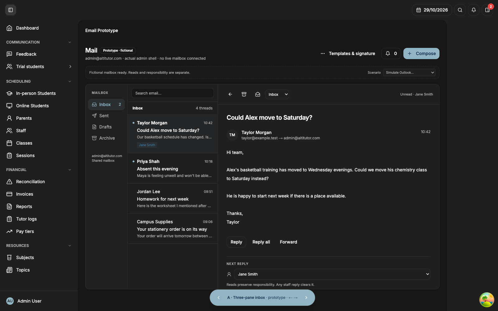
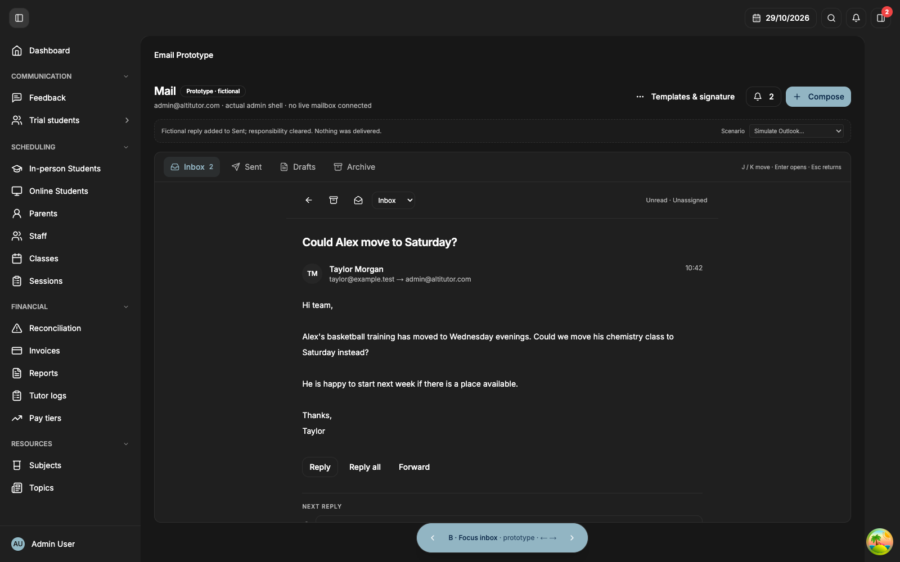
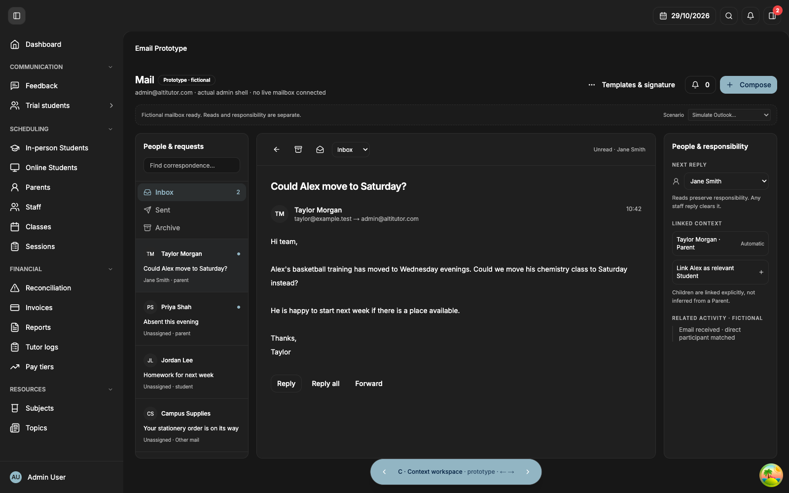

B is selected, with the routine-mail scope, existing history and normal under-a-minute sync target agreed. The original alternatives remain below for reference. The refined B v2 is now playable through this same private preview service.
A · Inbox and message together
Folders, conversation list and reader stay visible. This is the most familiar shared-mail arrangement and makes jumping between conversations easy.
Trade-off: more simultaneous information and less space for each message. Person links and responsibility sit with the reader.
Original alternative

B · Fast list, focused conversation
Scan a compact inbox, then open one conversation in a wide reading view. J/K moves through the list, Enter opens and Escape returns. Context stays with the open thread.
Recommended for the requested Superhuman-like workflow. Trade-off: the inbox list and full conversation are separate views.
Opening a conversation gives this focused reader (shown after the simulated reply exercise).

C · Correspondence beside business context
Keep the conversation in the centre and responsibility, linked people and related Activity in an always-visible right column.
Trade-off: strongest operational context, but the reader is narrower and the screen is denser than the focused inbox.
Original alternative

How to try the interactions: open a thread, change its responsible staff member, choose a simulated Outlook read/follow-up/reply, link Alex explicitly, insert a reply template and send a simulated reply. Sent also contains fictional operational emails. The floating bottom switcher changes A/B/C without leaving the app.
Agreed delivery scope
Routine mail
Inbox/folders, threaded messages, compose/reply/reply-all/forward, attachments, mailbox search, autosaved drafts, archive/delete, shared templates, staff signatures and the agreed assignment/Activity behavior.
Initial mailbox: admin@. Personal staff mailboxes remain future work. Drafts are shared with other mailbox users and Outlook. Show editing warnings and preserve recoverable text when conflicts are detected. Simultaneous Outlook editing still requires a nonproduction integration probe.
Existing history
Make the existing primary-mailbox history available, loading recent mail first and older folders progressively. Do not start with a new empty history or arbitrarily cut off older correspondence.
Actual mailbox size and special archive configuration are setup facts still to verify.
Freshness
Target updates within a minute during normal operation, with visible last-sync/error state and a manual refresh path. Outlook changes and replies must converge with admin-web.
Provider delays and uncertain sends must be shown honestly; a submission is not proof of recipient delivery.
Current checkpoint
Q7–Q9 are accepted. B v2 refines compact rows, keyboard navigation, search/command menu and the focused conversation view. Open the playable B v2, turn Annotate off, and try the flow.
Fictional mail only. This portable prototype illustrates the portal shell; the same mail source also runs inside the actual local authenticated admin shell. Live Graph sync and delivery are not implemented.